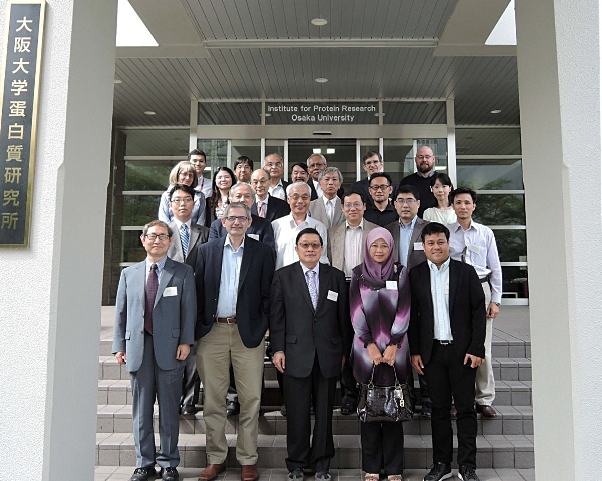

Minutes of the APPA Council Meeting held on June 6, 2016, at IPR, Osaka University

Meeting of the Asia Pacific Protein Association (APPA) Council
12:00-13:30 and 16:30-17:15, Monday, June 6, 2016, Osaka, Japan
Location
Institute for Protein Research, Osaka University, Meeting room of the 2nd Floor
Co-Chairs
Prof. Zengyi Chang, Past President of APPA, Peking University, China; Prof. Yuji Goto, Past President of APPA, Osaka University, Japan.
Attendees
APPA Previous Presidents and Councils (* being full representatives)
- Yuji Goto (Japan; Osaka University; Past President of APPA)
- Zengyi Chang (China; Peking University; Past President of APPA)
- Damien Hall (Australia; Australian National University) Attending of behalf of Erinna Lee
- Ming Lei (China; Shanghai Institute of Biological Sciences; Protein Society Council)
- *Yun-Ru (Ruby) Chen (Chinese Taipei; Academia Sinica)
- Jayant Udgaonkar (India; National Centre for Biological Sciences) Attending of behalf of Dr. Mohan Rao
- Bambang Sugiharto (Indonesia; University of Jember)
- *Haruki Nakamura (Japan; Osaka University)
- Hiroki Shirai (Japan; Astellas Pharma Co., Ltd.)
- *Weontae Lee (Korea, Yonsei University)
- *Raja Noor Zaliha Raja Abd. Rahman (Malaysia; Universiti Putra)
- *Lemmuel Tayo (Philippines; Mapua Institute of Technology)
- *Jianxing Song (Singapore; National University of Singapore)
- *Jisnuson Svasti (Thailand; Mahidol University)
- James R. Ketudat-Cairns (Thailand; Suranaree University of Technology)
- Truong Quoc Phong (Vietnam; Hanoi University of Science and Technology)
Attendees (Observers)
- Carol Post (USA; Purdue Univ.; President of the Protein Society)
- Jim Bowie (USA; UCLA; Previous President of the Protein Society)
- Fumio Arisaka (Japan; Nihon Univ.; Post Board Member of PSSJ)
- Hiroyuki Noji (Japan; The University of Tokyo, Board Member of PSSJ)
- Eri Chatani (Japan, Kobe University, Board Member of PSSJ)
- Genji Kurisu (Japan; Osaka University; Board Member of PSSJ)
- Atsushi Nakagawa (Japan; Osaka University; Board Member of PSSJ)
- Naoyuki Taniguchi (Japan; RIKEN)
Absentees:
- Young Kee Kang (Korea; Chungbuk National University, President)
- Richard J. Simpson (Australia; La Trobe University)
- Erinna Lee (Australia; La Trobe University)
- *Feng Shao (China; the National Institute of Biological Sciences)
Meeting minutes
- After the self-introduction by each participant, the Council from Thailand shared the information on the current status of the 5th APPA conference held jointly with the 12th international symposium of protein society of Thailand (PST). It will be held at the Tide Resort, Bangsaen at 11-14 July, and the participants would enjoy the discussions on “Protein science on the beach.” The need to keep the student prices low was emphasized by APPA Council members. Bambang Sujiharto noted that the Indonesian participants need to publish in a separate proceedings book to fulfill funding requirements. An extra charge might be asked to the authors of proceedings.
- The Councils from Indonesia, Malaysia and Chinese Taipei made a presentation on the protein science/society in each country, and mentioned the possibility and advantages for hosting the joint symposium of the Protein Society (PS) and APPA in 2020. Ruby Chen noted that Academia Sinica in Taipei could provide a free venue for the meeting, although only dorm-style housing is available in the immediate vicinity. Bambang Sugiharto noted that the Annual Meeting of the Indonesian Protein Society draws about 100 members, and proposed Bali, as a conference location. Noor Zaliha noted that the Malaysian government will provide strong support and the Kuala Lumpur area would serve as a likely convention site.
- The Protein Society provided a tentative proposal, but emphasized that they are flexible although they would like to use their website for registration and participate in selection of speakers. Based on the tentative proposal from PS (Carol Post) on May 24, all the participants of the meeting reached agreement that we are willing to hold the joint symposium of APPA and PS in 2020, if we could overcome a couple of issues. The place for 6th APPA meeting on 2020 will be jointly decided by the APPA Council as well as the Executive Council of the Protein Society, and the final decision of the APPA Council will be made at 5th APPA conference on July 2017.
- APPA Council from Japan could not accept one of the proposals; “The Protein Society would essentially run the meeting and be responsible for all expenses and received revenue, if any”. This is because in Japan they have an established local society, Protein Science Society Japan (PSSJ), and it runs annual meeting which collects around 800 attendees with a budget surplus. And thus the local society such as PSSJ has an initiative and should be responsible for planning, execution, and budget, although the local society should take requests and suggestions by the PS. PSSJ will start the working group studying the possibility of the 2020 PS/APPA joint meeting on the basis of discussion at this APPA council meeting.
- In contrast, the Chinese Taipei deputy would like the PS to take initiative, because the Biophysics Society of Taiwan support depends on the next president who will be elected and providing local support and a venue will be easier for them.
- Finally we agreed the schedule as follows;
- The PS will revise their proposal for the PS/APPA joint meeting (likely during their coming executive council meeting next month).
- The Council of APPA will discuss the revised proposal according to their domestic affairs by the end of 2016. Country representatives may submit their revised proposal for hosting the 2020 PS/APPA joint meeting based on the revised proposal.
- APPA will collect opinions from each member societies and submit an opinion at the PS Council meeting on February 2017, and make a final decision at the Council meeting to be held in July 2017 at Thailand.